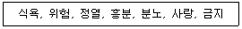
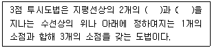
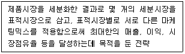

시각디자인산업기사 (2020-08-22 기출문제)
1과목: 색채학
1. 먼셀(Munsell) 색채 조화의 원리에 대한 내용으로 틀린 것은?
- 동일색상 조화 시 명도 및 채도에 관하여 정연한 간격으로 했을 때 조화된다.
- 명도는 같으나 채도가 다른 반대색끼리는 약한 채도에 넓이를 주고 강한 채도에 작은 면적을 주면 조화된다.
- 채도가 같고 명도가 다른 반대색끼리는 회색척도에 관하여 정연한 간격으로 했을 때 조화된다.
- 무채색의 평균명도가 N６일 때 조화로운 배색이 된다.
(정답률: 76%)

2. 2진수 값을 가진 컴퓨터 데이터의 가장 작은 단위는?
- 화소(pixel)
- 복셀(voxel)
- 비트(bit)
- 해상도(resolution)
(정답률: 76%)
3. 색채조화론 중 색입체로서 오메가 공간을 설정한 조화이론은?
- 오스트발트의 조화론
- 문·스펜서의 조화론
- 저드의 조화론
- 요하네스 이텐의 조화론
(정답률: 65%)
4. 오스트발트(W. Ostwald)의 색채조화론에 관한 설명 중 옳은 것은?
- 동일의 조화, 유사의 조화, 대비의 조화가 있다.
- 종래의 감성적으로 다루어졌던 색채조화론의 미흡한 점을 제거하고 정량적으로 색채를 취급하였다.
- 색상환을 24등분, 명도단계를 10등분 하였다.
- '조화는 질서와 같다'는 원리를 기본바탕으로 색채조화의 조직화에 대하여 정립하였다.
(정답률: 50%)
5. 가법혼색에 대한 설명 중 옳은 것은?
- Red와 Blue를 혼색하면 Magenta가 된다.
- Yellow 와 Cyan을 혼색하면 Green이 된다.
- 필터를 겹치면 겹칠수록 명도가 떨어진다.
- 가법혼색의 기본색은 CMY이다.
(정답률: 68%)
6. KS A 0011 물체색의 색이름 중 관용색명, 계통색명, 먼셀표기의 순서가 잘못 연결된 것은?
- 카키색 – 탁한 황갈색 – 2.5Y 5/4
- 빨강 – 사과색 – 7.5R 4/10
- 세룰리안 블루 – 파랑 – 7.5B 4/10
- 진달래색 – 밝은 자주 – 7.5RP 5/12
(정답률: 66%)
7. 색채계획의 조사, 연구계획을 세우는 과정에 관한 설명 중 가장 거리가 먼 것은?
- 경쟁하고 있는 다른 회사 제품의 색채 사용 상황을 조사한다.
- 제품이 시장에서 차지하고 있는 이미지를 파악한다.
- 제품의 디자인이나 기능, 용도에 적합한 색채를 실험적으로 조사한다.
- 사용자의 의견보다 제작자의 의견을 주로 청취하고 반영한다.
(정답률: 85%)
8. 두 색이 인접해 있을 때 그 경계부분에서 더 강하게 나타나는 대비현상은?
- 한난대비
- 면적대비
- 연변대비
- 보색대비
(정답률: 76%)
9. 영·헬름흘츠(Young·Helmholtz)의 3원색설에 해당되지 않는 색은?
- 빨강
- 초록
- 파랑
- 노랑
(정답률: 77%)
10. 그러데이션(gradation) 배색의 설명이 아닌 것은?
- 색과 색 사이에 분리색이 적용된 배색
- 한 가지 색이 다른 색으로 점진적으로 변화되는 배색
- 무지개, 색상환 등 색상의 자연스러운 연속배색
- 자연스러운 흐름과 리듬감이 느껴지는 배색
(정답률: 78%)
11. 디지털 데이터를 필름으로 출력하고 감광과정을 거쳐 CMYK의 4가지 판을 만들어 인쇄하는 방식은?
- 잉크젯 프린터 방식
- 레이저 프린터 방식
- 플로터 방식
- 옵셋인쇄 방식
(정답률: 58%)
12. 컬러 슬라이드 필름에 해당되는 혼합 방법은?
- 가산혼합
- 감산혼합
- 중간혼합
- 회전혼합
(정답률: 53%)
13. 다음 중 진출되어 보이는 색은?
- 파랑
- 초록
- 주황
- 회색
(정답률: 82%)
14. 색과 형태의 관계를 잘못 연결한 것은?
- 노랑 – 삼각형
- 파랑 – 원
- 빨강 – 사각형
- 주황 – 타원형
(정답률: 67%)
15. 어떤한 혼합으로도 만들 수 없는 원색이 아닌 것은?
- Red
- Yellow
- Blue
- Purple
(정답률: 82%)
16. 눈의 구조에서 간상체와 추상체의 광수용기가 있어 물체의 색채나 형체를 감지할 수 있는 부분은?
- 각막
- 수정체
- 망막
- 시신경
(정답률: 62%)
17. 색광을 겹치면 겹칠수록 밝게 되는 색의 혼합은?
- 가산 혼합
- 감산 혼합
- 마이너스 혼합
- 색료 혼합
(정답률: 79%)
18. 색의 연상·공감각에 관련된 단어들과 가장 관련된 색은?

- 빨강
- 주황
- 노랑
- 연두
(정답률: 90%)
19. CIE(국제조명위원회)에서 먼셀기호를 검사하고 측색할 경우의 표준조건으로 옳은 것은?
- 표준광원 C에서 관찰각도 2°
- 표준광원 C에서 관찰각도 10°
- 표준광원 D65에서 관찰각도 2°
- 표준광원 D65에서 관찰각도 10°
(정답률: 44%)
20. 먼셀(Munsell) 색상환에서 GY의 색은?
- 자주
- 연두
- 노랑
- 하늘색
(정답률: 89%)
2과목: 인쇄 및 사진기법
21. 문자의 크기 중 1포인트(point)는 약 몇 mm인가?
- 0.254
- 0.3514
- 2.54
- 3.514
(정답률: 59%)
22. 빛의 렌즈를 통과할 때 색광에 따라 다른 위치에 결상되는 수차는?
- 색 수차
- 구면 수차
- 코마 수차
- 혜성 수차
(정답률: 61%)
23. 사진 현상액 중 정착액의 주성분으로 옳은 것은?
- 질산나트륨
- 인산나트륨
- 탄산나트륨
- 티오황산나트륨
(정답률: 67%)
24. 책의 속지를 실이나 철사를 사용하지 않고, 책등부분을 갈아서 표면적을 넓힌 후 접착제로 굳혀 책을 만드는 방식은?
- 양장 제책
- 호부장 제책
- 무선철 제책
- 바인더 제책
(정답률: 59%)
25. 현존하는 가장 오래된 우리나라 목판 인쇄물은?
- 상정고금예문
- 백만탑다라니경
- 금강반야바라밀경
- 무구정광대다라니경
(정답률: 81%)
26. 카메라와 사람의 눈을 비교할 때 수정체는 카메라의 무엇과 같은 역할을 하는가?
- 셔터
- 조리개
- 렌즈
- 필름
(정답률: 71%)
27. 다음 중 컬러 필름에서 커플러(발색제)의 종류가 아닌 것은?
- cyan 커플러
- magenta 커플러
- yellow 커플러
- blue 커플러
(정답률: 78%)
28. 필름의 구조에서 빛의 난반사를 막아주는 층은?
- 중간층
- 보호막층
- 감광유제층
- 헐레이션 방지층
(정답률: 57%)
29. 다음 인쇄판 중 광화학적인 방법으로 제판하는 방식이 아닌 것은?
- 연판
- 선화판
- 망점판
- 콜로타이프
(정답률: 53%)
30. 잉크가 화선부를 통과하여 피인쇄체에 묻게 하고, 비화선부는 통과하지 않도록 한 인쇄방식은?
- 공판 인쇄
- 평판인쇄
- 볼록판 인쇄
- 오목판 인쇄
(정답률: 51%)
31. 물과 기름의 화학적인 반발작용을 이용한 인쇄방법은?
- 평판인쇄
- 공판인쇄
- 오목판인쇄
- 볼록판인쇄
(정답률: 62%)
32. 컬러 필름의 현상 시 각 층의 발색체 중 노광 후 마젠타(magenta)가 발색되는 유제층은?
- 청감 유제층
- 적감 유제층
- 녹감 유제층
- 황색 필터층
(정답률: 48%)
33. 포컬 플레인 셔터(focal plane shutter)에 대한 설명으로 옳지 않은 것은?
- 전자플래시 사용 시 셔터속도가 제한된다.
- 교환렌즈를 사용하는 경우 별도의 내장 셔터가 필요하다.
- 포컬 플레인 셔터는 카메라 본체 안쪽의 필름 가까이에 붙어 있다.
- 포컬 플레인 셔터는 필름의 바로 앞에 있으며 두 개의 막으로 되어 있다.
(정답률: 49%)
34. 다음 중 사진 필름의 정착처리에서 경막제의 역할을 하는 약품이 아닌 것은?
- 초산
- 크롬명반
- 칼륨명반
- 포름알데히드
(정답률: 48%)
35. 움직이는 물체를 카메라가 따라 가면서 촬영하는 방법은?
- 패닝(panning)
- 비네트(vignette)
- 프레이밍(framing)
- 포트레이트(portrait)
(정답률: 67%)
36. 흑백 사진 인화법에서 카메라를 사용하지 않고 도안적인 사진을 만드는 방법은?
- 라인 포토
- 포토그램
- 디포메이션
- 릴리프 포토
(정답률: 55%)
37. 인쇄용 잉크의 구성 요소로 볼 수 없는 것은?
- 안료
- 용제
- 컴파운드
- 니트릴고무
(정답률: 75%)
38. 현상주약의 산화를 방지하고 현상액이 오래 가도록 하는 보항제의 약품은?
- 아세트산
- 탄산나트륨
- 브롬화칼륨
- 아황산나트륨
(정답률: 57%)
39. 다음 중 동일한 촬영조건에서 피사계 심도가 가장 깊은 것은?
- f/4
- f/5.6
- f/8
- f/16
(정답률: 62%)
40. 인쇄용지를 비도포지, 도포지로 구분할 때 도포지에 해당되는 것은?
- 갱지
- 중질지
- 아트지
- 모조지
(정답률: 69%)
3과목: 시각디자인론
41. 1988년 서울에서 개최된 24회 하계올림픽 캐릭터 디자이너로 옳은 것은?
- 주지아로
- 올리베티
- 멭디니
- 김 현
(정답률: 81%)
42. 이탈리아 디자인의 특징과 가장 관련이 없는 것은?
- 급진주의 디자인
- 절제된 양식
- 개성위주 디자인
- 역사적 유산
(정답률: 60%)
43. 다음 ( )에 해당되는 용어로 알맞은 것은?

- 소점과 지점
- 소점과 시점
- 이점과 시점
- 이점과 지점
(정답률: 66%)
44. 커뮤니케이션의 기능과 매체의 분류로 틀린 것은?
- 지시적 기능 : 신호, 화살표
- 설득적 기능 : 지도, 영화
- 상징적 기능 : 심볼마크, 패턴
- 기록적 기능 : 사진, 회화
(정답률: 81%)
45. 글자를 좌우로 압축하거나 확대하는 변형을 뜻하는 용어는?
- 세리프
- 장평
- 커닝
- 리딩
(정답률: 75%)
46. 컴퍼스를 사용하지 않고도 가장 용이하게 그릴 수 있는 것은?
- 세 변의 길이가 주어진 삼각형
- 각의 2등분
- 각의 이동
- 해칭선
(정답률: 60%)
47. 유겐트스틸(Jugendstil), 세세션(Seession)으로 불린 디자인 사조는?
- 아르누보
- 모더니즘
- 표현주의
- 구성주의
(정답률: 68%)
48. 축측투상에 대한 설명 중 잘못된 것은?(오류 신고가 접수된 문제입니다. 반드시 정답과 해설을 확인하시기 바랍니다.)
- 부등각 투상이란 물체의 3면이 투상면에 대해 각기 다른 경사를 가진다.
- 좌우 수직면은 투상면에 대해 등각을 이루나 평면은 다른 경사각을 가지는 것을 3등각 투상이라 한다.
- 세 개 모두 등각인 경우를 등각투상이라 한다.
- 등각 투상도의 경우 세 개의 축 모두 경사진 선이므로 투상된 길이는 실제보다 길어진다.
(정답률: 45%)
49. 기업광고의 성격과 가장 관계 없는 것은?
- 기업 이미지 향상을 위한 광고
- 공공 기업 광고
- 신제품 광고
- 사회 책임적 기업 광고
(정답률: 49%)
50. 알베르트(L.B. Alberte)의 회화론에서 설명하는 디자인 법칙은?
- 원근법
- 작도법
- 반복법
- 평행법
(정답률: 59%)
51. 바우하우스와 관련 없는 인물은?
- 요하네스 이텐(Johannes Itten)
- 윌터 그로피우스(Walter Gropius)
- 맥컬로(McCollough)
- 몰흘리 나기(Laszlo Moholy-Nagy)
(정답률: 57%)
52. 정확한 묘사력을 기본으로 형태를 변형하여 임팩트 있게 표현하는 방법은?
- 데칼코마니(decalcomanie)
- 데포르마시옹(deformation)
- 마아블링(marbling)
- 몽타쥬(montage)
(정답률: 54%)
53. 1960년대 산업성장으로 산업분야의 세분화와 전문화는 디자인을 산업사회의 독립된 분야로 분리시켜 객관적 아름다움과 절제된 양식을 추구한 나라는?
- 미국
- 일본
- 독일
- 이탈리아
(정답률: 55%)
54. 아르누보(Art Nouveau) 양식과 관련이 없는 사람은?
- 앙리 반 데 벨데(Henry van de Velde)
- 폴 앙카르(Paul Hanker)
- 빅토르 오르타(Victor Horta)
- 엘 리시츠키(El Lissitzky)
(정답률: 46%)
55. 19세기 후반 생활 공예에서 품질과 미의 향상을 추구한 윌리엄 모리스(William Morris)의 디자인 개혁운동은?
- 산업화운동
- 장식화운동
- 예술생산운동
- 미술공예운동
(정답률: 77%)
56. 합리성과 단순성으로 명쾌한 조형적 감정을 유발시키며 자연의 형태와 대조되는 것은?
- 유연적 형태
- 유기적 형태
- 불규칙적 형태
- 기하학적 형태
(정답률: 63%)
57. 소비자의 행동분석을 위해 시장을 세분화하는데 주요 변수로 볼 수 없는 것은?
- 제품집단적 변수
- 인구통계적 변수
- 사회심리적 변수
- 지리적 변수
(정답률: 44%)
58. 행복, 슬픔, 자연스러움, 화려함, 담대함 또는 그 밖의 감정이나 개념을 표현하는 그래픽적 수단과 힘을 가지고 있는 것은?
- 점
- 선
- 면
- 입체
(정답률: 67%)
59. 디자인 관리의 3가지 과정을 옳은 것은?
- 판매, 광고, 디스플레이
- 기획, 설명서, 라벨
- 포장, 광고, 전시
- 계획, 실시, 통제
(정답률: 57%)
60. 디자인의 요소와 원리 중 형태에 대한 설명으로 틀린 것은?
- 시각과 촉각에 의해 지각된다.
- 시각적으로 느껴지는 촉각적 지각이다.
- 형태의 범주에는 점, 선, 면, 입체가 있다.
- 자연형태, 인위형태, 현실형태, 순수형태 등이 있다.
(정답률: 52%)
4과목: 시각디자인실무 이론
61. 타이포그래피의 알파벳 글자꼴 용어 중에서 엑스하이트(x-height)의 의미로 맞는 것은?
- 베이스라인(base line)부터 민라인(mean line)까지의 높이
- 베이스라인(base line)부터 캡라인(cap line)까지의 높이
- 디센더라인(descender line)부터 민라인(mean line)까지의 높이
- 디센더라인(descender line)부터 캡라인(cap line)까지의 높이
(정답률: 42%)
62. 잡지광고의 특성으로 가장 적합한 설명은?
- 매체 수명이 짧아 신속한 인상을 주어야 한다.
- 지역적 특성에 맞는 광고활동에 적합하며 지역적 탄력성이 강하다.
- 인쇄효과가 좋으므로 광고 소구력과 보급률이 빠르다.
- 한 번에 전국광고가 가능하며 예상고객의 도달 범위가 넓다.
(정답률: 37%)
63. 타이포그래피의 가독성에 관한 설명으로 옳은 것은?
- 판독성이 높은 활자꼴이라도 짜임이나 배치가 좋지 못하면 읽기 어려워질 수도 있다.
- 한글의 경우는 영문의 경우보다 조금 더 행간을 좁혀야 가독성이 높아진다.
- 영문의 경우 모두 다 대문자로 이루어진 문장보다 대소문자 섞여있는 문장이 가독성을 떨어뜨린다.
- 본문의 오른쪽 맞추기 정렬 방법을 취했을 때 가독성이 높아진다.
(정답률: 69%)
64. 게슈탈트(Gastalt) 법칙에 해당하지 않는 것은?
- 유사성의 법칙
- 근접성의 법칙
- 연속성의 법칙
- 상징성의 법칙
(정답률: 64%)
65. 다음 내용이 설명하고 있는 것은?

- 상품화 및 집중화 마케팅
- 표준화 마케팅
- 동질화 마케팅
- 차별화 마케팅
(정답률: 58%)
66. 다음 중 옥외광고물이 아닌 것은?
- 애드벌룬
- 빌보드
- 스카이라이팅
- POP 광고
(정답률: 60%)
67. 블리스(C.K. Bliss)가 발명한 것으로 한자의 표의성을 바탕으로 한 그림문자 시스템은?
- 아이소타입(ISOTYPE)
- 시맨토그래피(Semantography)
- 포노그램(Phonogram)
- 픽토그램(Pictogram)
(정답률: 45%)
68. 일반적으로 가장 큰 광고효과가 있는 지면은?
- 내지면
- 표지2면
- 표지3면
- 표지4면
(정답률: 48%)
69. 대칭(symmetry)과 비대칭(asymmetry)이 가장 가깝게 적용되는 디자인 원리는?
- 강조(accent)
- 대비(contrast)
- 율동(rhythm)
- 균형(balance)
(정답률: 59%)
70. 일반적인 디자인의 아이디어 도출 과정을 순서대로 나열한 것은?
- 아이디에이션 → 정보수집 → 콘셉트 도출 → 정도분석
- 정보수집 → 정보분석 → 콘셉트 도출 → 아이디에이션
- 정보수집 → 콘셉트 도출 → 아이디에이션 → 정보분석
- 정보수집 → 정보분석 → 아이디에이션 → 콘셉트 도출
(정답률: 49%)
71. 컴퓨터그래픽스에 대한 설명으로 적합한 것은?
- 컴퓨터의 하드웨어와 소프트웨어를 이용하여 도형, 그림, 합성 등을 만드는 기술이다.
- 컴퓨터 그래픽스는 정통적인 디자인 가치와 원리를 따르지 않는다.
- 컴퓨터 그래픽의 결과물은 도구와 기계의 성능으로만 결정된다.
- 현재의 컴퓨터 그래픽스의 작업은 프로그래머만의 몫이다.
(정답률: 76%)
72. TV CM에서 높은 빌딩이나 절벽이 높이를 강조하려고 할 때 가장 적당한 촬영기법은?
- 팬(Pans)
- 트럭(Trucks)
- 줌(Zooms)
- 틸트(Tilt)
(정답률: 60%)
73. 효율적 시장세분화를 위한 조건으로 틀린 것은?
- 구매력이나 예상매출액 등은 측정 가능하여야 한다.
- 해당 세분시장에 마케팅활동을 효과적으로 집중시킬 수 있어야 한다.
- 세분시장은 작고 수익성이 있어야 한다.
- 효율적인 마케팅 프로그램의 수립이 가능하고 실행될 수 있어야 한다.
(정답률: 75%)
74. 셰넌(C.E.Shannon)과 위버(W.Weaver)의 커뮤니케이션 과정모델을 바르게 설명한 것은?
- 정보원 → 기호 해독 → 메시지 → 기호화 → 목표
- 정보원 → 기호화 → 메시지 → 기호 해독 → 목표
- 메시지 → 기호 해독 → 목표 → 정보원 → 기호화
- 목표 → 정보원 → 메시지 → 기호 해독 → 기호화
(정답률: 47%)
75. 교통광고 디자인에 관한 설명으로 거리가 먼 것은?
- 교통광고란 대중의 교통수단의 내·외부는 물론 역이나 역 시설물 등을 매체로 하는 광고이다.
- 교통인구의 중가에 따라 기능과 역할에 있어 매스미디어(Mass Media)적 성격이 강화되고 있다.
- 광고의 노출 빈도가 소구 대상의 선택 의사와 불가분의 관계를 갖는다.
- 무조건적으로 소구 대상에게 노출될 수 있어 다른 매체가 갖지 못하는 광고의 특성을 가지고 있다.
(정답률: 48%)
76. 주생활에 관한 AIO를 이용한 라이프스타일 목록 조사에서 A항목(Activity)에 분류되어야 한다고 판단되는 설문 내용은?
- 나는 집을 마련하기 전에 차는 있어야 한다고 생각한다.
- 나는 온돌보다 침대가 더 좋다.
- 나는 가구배치나 장식 등을 자주 바꾼다.
- 나는 교통이 불편해도 공기 좋은 곳으로 이사 가고 싶다.
(정답률: 56%)
77. 파일의 생성에서부터 출력까지 문서와 그래픽을 이미지 상태 그대로 유지하고, 모든 컴퓨터 시스템에 인쇄 상태 그대로를 보여주는 포맷형식은?
- GIF
- JPEG
- PNG
(정답률: 74%)
78. 컴퓨터 그래픽스 발전에 크게 기여한 인물 또는 회사를 설명한 것으로 틀린 것은?
- 애플(Apple) : 그래픽 사용자 인터페이스(graphical user interface/GUI)
- 더글라스 C : 엔젤바트(Douglas C. Engelbart) : 마우스 개발
- 어도비 시스템즈 : 포스트스크립트 페이지-디스크립션(PostScript page-description) 프로그래밍 언어 개발
- 마이크로소프트(Microsoft) : 최초의 레이저 프린터 출시
(정답률: 52%)
79. 영문 서체(Typeface)중 세리프(serif) 스타일은?
- Arial, Futura
- Bodoni, Garamond
- Franklin Gothic, Helvetica
- Gill Sans, Univers
(정답률: 43%)
80. 시각커뮤니케이션 매체의 특징 중에서 설명이 틀린 것은?
- 편집 디자인은 신문, 잡지, 브로슈어, 서적 등에서 시각물을 기능적으로 구성하고, 그 구성 속에 정보의 위계를 탄생시키는 분야이다.
- 캘린더는 정보의 제공과 장식적인 기능도 병행한다.
- 포스터는 광고매체로서 이용되며 감각적이고 인상적인 방법이나 장식성은 없다.
- 포장디자인은 상품을 보호하고 상품의 미적가치를 높여 판매촉진을 돕는다.
(정답률: 78%)